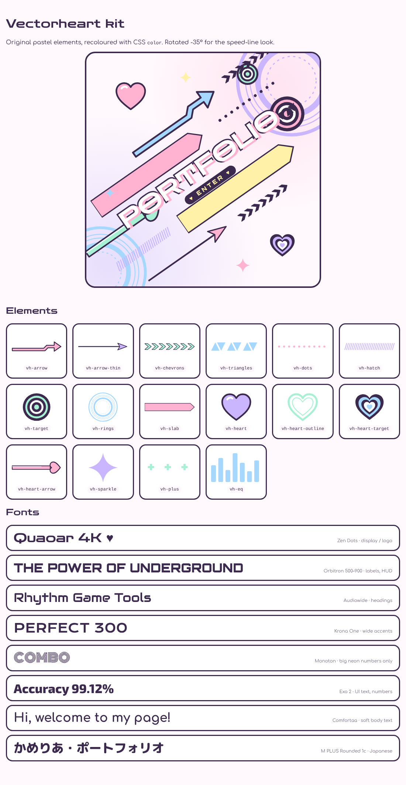

Purpose: agree on what each screen contains and how a visitor moves between them, before any polished mockup is drawn.
Nothing here is final art. The boxes are low-fi wireframes: they show what goes where, not how it looks. The look comes from the vectorheart kit (shown at the bottom). Every screen is still a 🆕 GAP. Each card lists the questions to answer before its mockup is drawn.
first visit returning visit
| |
v |
+--------------+ Skip (after 1s) |
| * INTRO |-----------------+ |
| vectorheart | v v
| boot / game |----------> +-----------------------+
+--------------+ ends | * LOBBY | toggles: sound / night / lite
| profile, player card |-- tap card --> osu! / TETR.IO / GitHub profile (new tab)
| info, [ ENTER <3 ] |
+-----------+-----------+
click unlocks audio | ? BGM can only start after this click
v
+-----------------------+
| * WARP | morph Lobby -> Portfolio (+ SFX)
+-----------+-----------+
v
+----------------------------------------------------------------------------+
| * PORTFOLIO BGM fades in, low volume |
| |
| Projects > osu!taiko > osu!mania 4K > TETR.IO > Skills and Setups |
| > Timeline > Blog --> * Blog post |
| > Shoutouts > Guestbook --> submit --> "waiting for approval" |
| > Footer: LinkedIn, GitHub, Instagram, Facebook, work email |
| |
| Feature audio (chart song, hitsounds, TETR.IO sound) => BGM crossfades out |
+----------------------------------------------------------------------------+
context: /admin (Sveltia CMS) . Guestbook approval queue . 404 page
16 SVG elements, 8 fonts, demo poster. This is the art toolbox, not a screen. Static image: the live page loads its sprite with a script, which this page's security rules block. Open live ↗

Game-like first-visit animation built from vectorheart elements. Your concept is coming later.
Who you are, in one screen: profile, player card (osu! · TETR.IO · GitHub), short info, the Enter button.
The morph from Lobby into Portfolio. Sound and animation are still open.
Shell around all Showcases: header, section nav, BGM control, toggles.
GitHub repos, internship and career work. First Showcase, so recruiters hit it straight away.
Camellia – Circles of Death, your map. Chart preview with hitsounds + playable mode. Muted by default.
かめりあ – Quaoar, your 4K map. Same player shell as taiko so they feel like a pair. Layout borrows kenzync.dev's tool cards.
Your recorded gameplay as a looping video, plus a TETR.IO Stats Card.
Tech skills alongside gaming gear and settings.
High school, university, internship, career. Secondary, so it stays compact.
Your content board: latest posts in the Portfolio, each opening a full post page. Written in /admin.
Friends and people you respect, each with an optional quote.
Approved messages, a short form, and hover cards for osu!/TETR.IO names.
LinkedIn, GitHub, Instagram, Facebook, work email (hidden from bots, copy button). Music credits.
Ready-made editor. Not designed by us, only configured (collections for Blog, Projects, Shoutouts, Timeline, Skills and Setups).
Private page: pending messages, ⚠ impersonation flags, Approve / Delete / Ban. Function first, light styling.
Small and cute: "Miss!" in osu! style with a way back. Cheap win, one mockup.